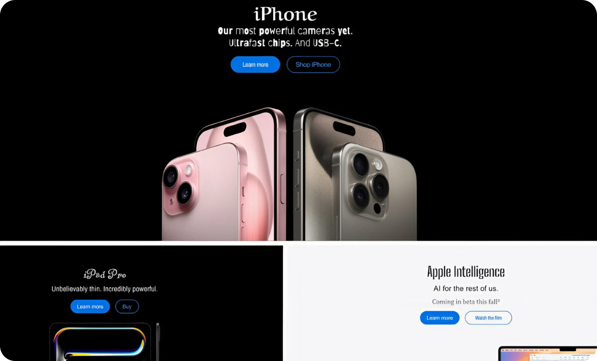
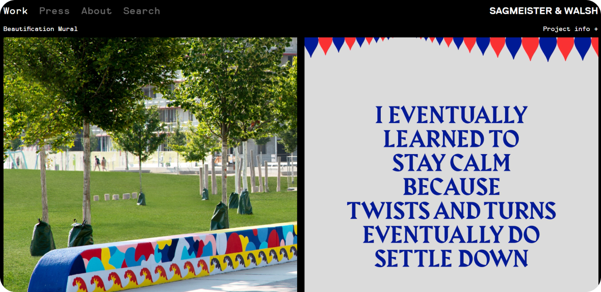
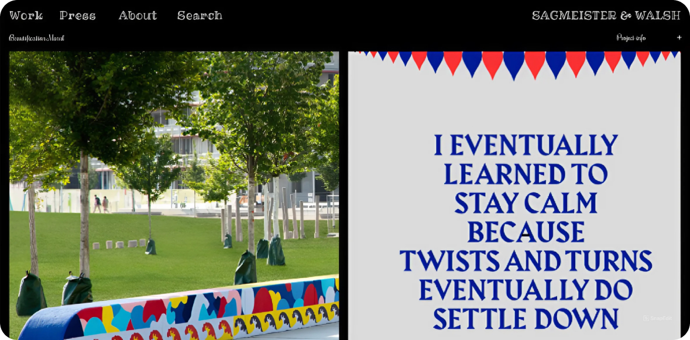
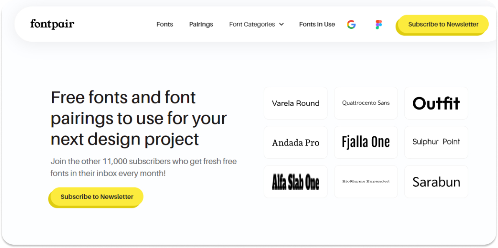
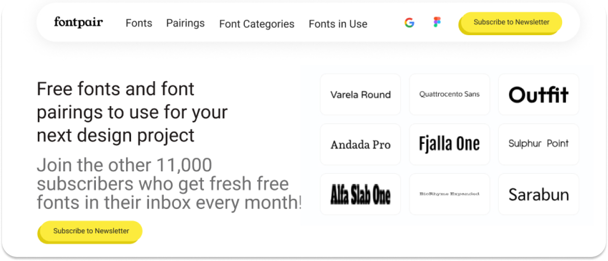
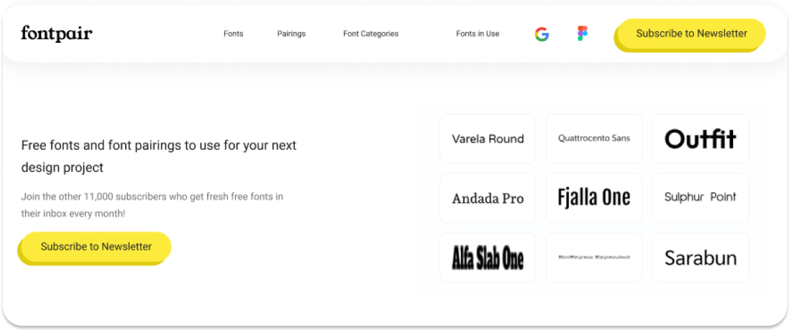
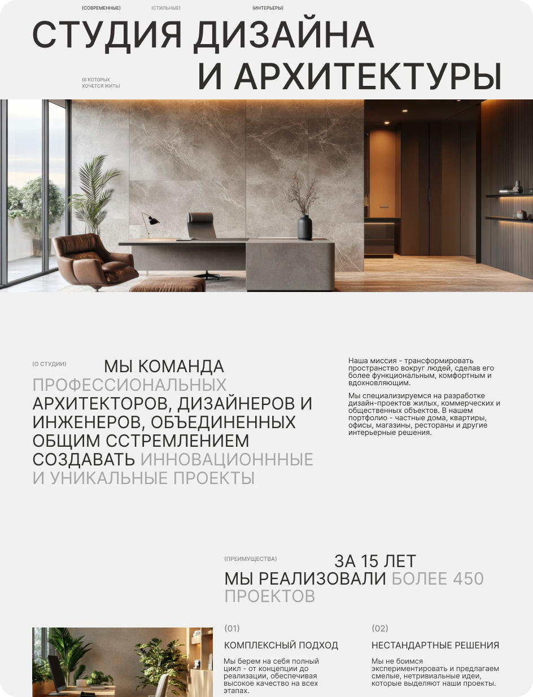
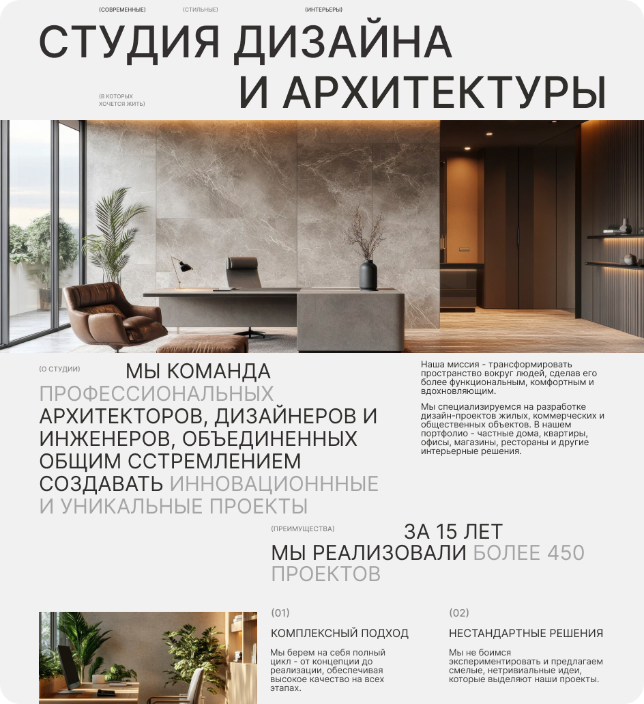

Фундамент дизайна
Типографика
Типографика в веб-дизайне — это не “красивые” шрифты, а правильная логика подачи текста. Правильная логика создаёт красоту.
Ошибки
Много стилей шрифтов
Почему использование множества стилей шрифтов является проблемой?
1. Нарушение визуальной целостности. Чрезмерное разнообразие шрифтов создает хаотичный, перегруженный вид, который отвлекает внимание пользователей от основного контента.
2. Снижение читабельности. Различные шрифты с разными размерами, начертаниями и интервалами затрудняют восприятие текста. Пользователям становится сложнее следить за логикой и структурой информации.
3. Увеличение времени загрузки. Чем больше шрифтов, тем дольше будет загружаться сайт.
4. Нарушение единства бренда. Использование разных шрифтов может противоречить общему фирменному стилю и брендингу компании. Последовательное применение одного или двух основных шрифтов помогает укрепить визуальную идентичность бренда.
Как избежать ошибки "Много стилей шрифтов"?
1. Ограничьтесь 1-2 основными шрифтами. Выбери 1-2 шрифта, которые будут использоваться на всех страницах сайта. Используй дополнительные стили (жирный, курсив) в рамках этих шрифтов, если необходимо.
2. Сделай выбор шрифтов осознанным. Тщательно подбирай шрифты, учитывая тематику, целевую аудиторию и общий стиль веб-сайта. Следи за их читабельностью, гармоничностью и соответствием бренду.
Хорошо
Плохо

Обилие декоративных шрифтов
Иногда дизайнеры, стремясь сделать сайт более оригинальным и запоминающимся, злоупотребляют использованием декоративных шрифтов, что может привести к серьезным проблемам.
Почему использование множества декоративных шрифтов является проблемой?
1. Снижение читабельности. Чрезмерное использование декоративных шрифтов значительно снижает читаемость текста, особенно в длинных блоках. Пользователям становится тяжело воспринимать информацию, что негативно влияет на их опыт взаимодействия с сайтом.
2. Отсутствие последовательности. Если на одной странице или в пределах одного дизайна используется множество различных декоративных шрифтов, это создает впечатление отсутствия стилистического единства и иерархии.
3. Снижение доступности. Декоративные шрифты зачастую плохо воспринимаются людьми с ограниченными возможностями, использующими экранные читалки или другие вспомогательные технологии. Это нарушает принципы веб-доступности.
Как избежать ошибки "Много стилей шрифтов"?
1. Используй декоративные шрифты дозированно. Отводи им роль акцентов, используя их только в заголовках, логотипах или коротких фразах. Избегай использования декоративных шрифтов для больших текстовых блоков.
2. Сохраняй единообразие. Ограничь использование декоративных шрифтов до 2-3 вариантов в пределах одного дизайна, чтобы не нарушать целостность восприятия.
3. Заботься о читаемости. Убедись, что декоративный шрифт обеспечивает достаточную контрастность и разборчивость текста, особенно на мобильных устройствах.
Хорошо

Плохо

Размер
Почему размер шрифта так важен?
1. Читаемость. Шрифт, который слишком мал или слишком велик, затрудняет восприятие текста пользователями. Оптимальный размер обеспечивает комфортное чтение.
2. Удобная навигация. Размер заголовков, меню и других интерактивных элементов определяет, насколько легко пользователю ориентироваться на странице.
3. Отзывчивость дизайна. На разных устройствах (от больших мониторов до мобильных телефонов) оптимальный размер шрифта будет различаться, и дизайн должен адаптироваться под это.
Распространенные ошибки в выборе размера шрифта
1. Слишком мелкий шрифт. Мелкий текст сложно читать, особенно на мобильных устройствах. Это раздражает пользователей и снижает удобство использования сайта.
2. Слишком большой шрифт. Чрезмерно крупный шрифт может выглядеть неэстетично и ухудшать восприятие контента. Он также может приводить к необходимости постоянно прокручивать страницу.
3. Несогласованность размеров. Если размеры шрифтов в заголовках, текстовых блоках и интерактивных элементах сильно различаются, это нарушает целостность дизайна.
4. Отсутствие адаптивности. Если размер шрифта не подстраивается под размеры экранов разных устройств, это ухудшает удобство использования на мобильных платформах.
Как выбрать оптимальный размер шрифта?
1. Установи базовый размер шрифта. Определи оптимальный базовый размер шрифта для основного текста, обычно в диапазоне от 14 до 18 пикселей. Этот размер будет отправной точкой для остальных элементов.
2. Согласуй размеры заголовков и интерактивных элементов. Заголовки должны быть на 1,5-2 раза больше базового размера, а интерактивные элементы (кнопки, ссылки) - на 0,5-1 раз больше.
3. Обеспечьте удобство чтения на мобильных устройствах. Проверяй, насколько комфортно читается текст на небольших экранах. При необходимости увеличивайте базовый размер шрифта для мобильной версии.
Хорошо

Плохо

Плохо

Логика в отступах
Почему логика в отступах так важна?
1. Создание визуальной иерархии. Варьируя размеры отступов, можно акцентировать внимание пользователя на наиболее важных элементах. Большие отступы выделяют ключевые блоки, а меньшие - второстепенные.
2. Улучшение общей эстетики. Гармоничные, последовательные отступы придают веб-странице аккуратный, сбалансированный вид. Они помогают создать приятную, упорядоченную визуальную композицию.
3. Повышение удобства навигации. Логичная структура отступов облегчает ориентацию пользователя на странице. Четкое разделение блоков делает навигацию более интуитивной.
Распространенные ошибки в отступах
1. Отсутствие логики и последовательности. Одна из самых частых ошибок - когда размеры отступов между различными элементами (заголовками, абзацами, изображениями и т.д.) хаотичны и непоследовательны. Это нарушает общую структурированность и визуальную гармонию страницы.
2. Слишком большие или слишком маленькие отступы. Избыточные отступы создают ощущение разрозненности и "воздушности" страницы. А недостаточные отступы затрудняют различение и восприятие отдельных элементов.
3. Нарушение пропорций. Часто можно увидеть, что отступы между крупными блоками (например, заголовком и основным текстом) такие же, как и между абзацами внутри блока. Это нарушает визуальную иерархию.
4. Несогласованность отступов между элементами. Когда отступы между текстом и изображениями, или между блоками разного типа не соответствуют друг другу, это вызывает дисбаланс и ощущение "разорванности" дизайна.
Как выбрать оптимальные отступы?
1. Выдерживай пропорции. Как правило, отступы между крупными блоками (заголовок-текст, текст-изображение) должны быть больше, чем между абзацами внутри блока. Соблюдай эту пропорциональность.
2. Обеспечь визуальный баланс. Отступы между различными элементами (текст, изображения, формы и т.д.) должны быть согласованы и создавать гармоничную композицию. Избегай диспропорций.
3. Тестируй и подстраивай. Экспериментируй с различными вариантами отступов, тестируй их читабельность и эстетику. По мере необходимости подстраивай размеры.
Хорошо

Плохо

Итоги
1. Выбор шрифтов. Использование несоответствующих шрифтов может испортить восприятие контента. Важно выбирать шрифты, которые отражают стиль и функциональность проекта.
2. Слишком много шрифтов. Применение нескольких шрифтов в одном дизайне создает визуальный шум. Рекомендуется ограничиваться 2-3 шрифтами для обеспечения гармонии.
3. Неочевидная иерархия. Отсутствие четкой визуальной иерархии может затруднить восприятие информации. Используй размеры, жирность и цвет для выделения важных элементов.
4. Пробелы и отступы. Игнорирование пробелов часто приводит к перегрузке страницы. Правильные отступы и межстрочные расстояния делают текст более читабельным.
5. Читаемость текста. Маленькие размеры шрифта и низкий контраст между текстом и фоном снижают читаемость. Убедись, что текст легко читается на любом устройстве.
6. Игнорирование адаптивности. Необходимость адаптации типографики для различных устройств часто упускается. Убедись, что шрифты и размеры текста выглядят гармонично на всех экранах.
Примеры заданий для практики
Шрифты в гармонии
Создай макет страницы с использованием не более чем двух шрифтов. Убедись, что они дополняют друг друга и создают гармоничное оформление. Опиши, почему ты выбрали именно эти шрифты и как они взаимодействуют между собой.
Отступы и пробелы
Создай страницу, на которой ты будешь работать с различными отступами между элементами (заголовками, текстом, изображениями). Примени правила "воздуха" и объясни, как это улучшает восприятие информации.
Адаптивная типографика
Выбери существующую веб-страницу и перепроектируй ее типографику для различных устройств (мобильный, планшет, десктоп). Объясни, какие изменения ты внес и почему они важны для удобства пользователя.